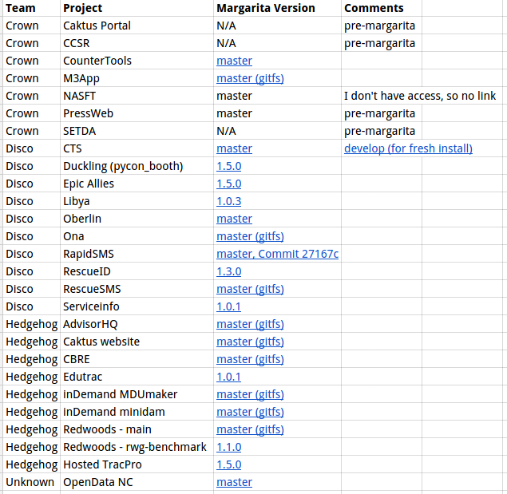

Pinning Margarita
Vinod Kurup
What is Margarita and why would you want to pin it?
Background
django-admin.py startproject
Hardcoded secret key
# SECURITY WARNING: keep the secret key used in production secret!
SECRET_KEY = 'u(!lzq*w^4(rl@!75&-l(gmfiiob_(w0*^agmxc#_ns!iz40x6'
Customized startproject
django-admin.py startproject \
--template=https://github.com/caktus/django-project-template/zipball/master \
--extension=py,rst,yml \
--name=Makefile,gulpfile.js,package.json
myproject
Deployment
Salt
{% set python_version = pillar.get('python_version', '2.7') %}
{% if python_version == '2.7' and pillar.get('python_backport') %}
deadsnakes-python2.7:
pkgrepo.managed:
- humanname: Deadsnakes PPA for 2.7
- ppa: fkrull/deadsnakes-python2.7
- require_in:
- pkg: python-pkgs
{% endif %}
python-pkgs:
pkg.installed:
- pkgs:
- python-pip
- ...
- python{{ python_version }}
- python{{ python_version }}-dev
{% for name in pillar.get('python_headers', []) %}
- {{ name }}
{% endfor %}
virtualenv:
pip.installed:
- upgrade: True
- require:
- pip: pip
/usr/lib/libz.so:
file.symlink:
- target: /usr/lib/{{ grains['cpuarch'] }}-linux-gnu/libz.so
- require:
- pkg: python-pkgs
top.sls
base:
'*':
- base
- sudo
- sshd
- sshd.github
- locale.utf8
- newrelic_sysmon
- project.devs
'environment:local':
- match: grain
- vagrant.user
'roles:salt-master':
- match: grain
- salt.master
'roles:web':
- match: grain
- project.web.app
'roles:worker':
- match: grain
- project.worker.default
- project.worker.beat
'roles:balancer':
- match: grain
- project.web.balancer
'roles:db-master':
- match: grain
- project.db
'roles:queue':
- match: grain
- project.queue
'roles:cache':
- match: grain
- project.cache
Highstate
fab staging deploy
Result
Summary
-------------
Succeeded: 12 (changed=3)
Failed: 0
-------------
Total states run: 12
Project Template contents
- Django settings
- Salt state files describing our deployment
- Fabfile to communicate with salt
Problems
- Reuse
- Migrating improvements among projects
Reuse
Migrating deployment improvements
Margarita improvements
- Start versioning Margarita
- Move all(*) salt states to Margarita
* - Not all states
Project Template now
top.sls filemargarita.sls file- Fabric commands to run deploys
Pillar
- List of configuration values that salt states can use
- We use it to scope by environment
Current state of affairs
- Your project is newish and is already using a pinned version of Margarita
- Your project is not using a pinned version of Margarita
Already Pinned
conf/pillar/project.sls
margarita_version: 1.5.0
Unpinned
That is what this talk is about!

High level list of changes
- Salt needs to be upgraded to a known 'good' version 2015.5.8, and prevented from automatically
updating
- Secrets are no longer maintained in plaintext. They're encrypted now, so they can be stored in the repo
- vagrant setup changed
- Most salt states moved from project template to margarita
- staging.py and production.py settings files merged
- All logs go to syslog
- dotenv used for env var management
- ALLOWED_HOSTS includes only the DOMAIN env var, by default
- Calvin's frontend improvements
- fabfile improvements
- Makefile improvements
- Coverage by default, .gitignore updates, Travis setup